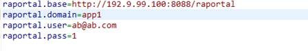

文档编号：ICSS-PM-RD140417-001
|
|
Raportal V6.0 开发手册（指南） （Radar
cloud Version 6.0） |
北京中软国际信息技术有限公司
2014年4月
文档版本：1.0
目录
1.1 通过开发工具生成普通web应用....................................................................... 2
1.2 登陆raportal开发门户注册应用......................................................................... 2
1.3 修改应用中raportal.properties文件.................................................................. 2
此文档主要帮助开发者完成应用和rapotal的对接、接口调用、信息配置等。
通过开发工具生成的web应用会自动生成两个模块，分别是登陆模块和菜单模块：
登录模块：此模块专门供应用登录使用，开发者可自行修改登录界面风格；
菜单模块：此模块包含页面基本布局，并展示当前用户有权访问的菜单项；
其主要对应用相关数据的配置,如下步骤：
第一步：给自己的应用创建组织人员、岗位、角色（具体操作可参考使用手册）
第二步：注册应用。注意：其中域名是全局唯一性
第三步：上传应用。如果应用在开发阶段，可不上传。
第四步：点击应用列表栏操作中的配置，对此应用进行角色授权和菜单创建。
到这里rapotal配置任务完成
此文件是通过开发工具自动生成的，主要用来与raportal创建连接，调用rasdk使用。
如下：

raportal.base表示raportal平台访问地址
raportal.domain 表示注册应用中的域名
raportal.user 表示登入raportal平台的开发者账号
raportal.pass 表示登入raportal 平台的开发者密码
此文件配置完毕后，如果网络畅通，即可调用rasdk提供的api接口
Raportal中的调用，是通过rest访问形式发布，全部集中在rasdk.jar中。
创建应用时已经加入此rasdk.jar包，接口含义可参考javadoc。调用方式：
例一：获取有权访问的菜单：
String menus=
PortalUtil.getMenus(person.getPersonUUID());
返回json字符串
例二：获取用户信息
Person
person=JbpmAPI.getPersonById(id);
返回person对象